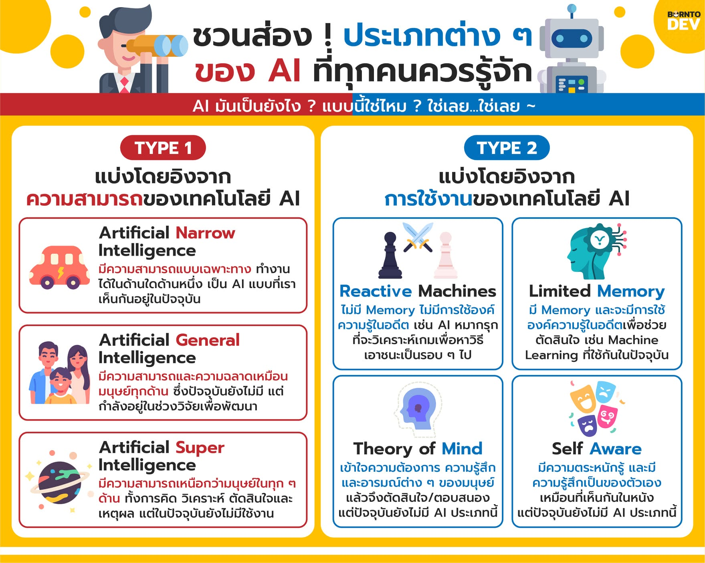

ประเภทของปัญญาประดิษฐ์
AI สามารถแบ่งตามความสามารถได้หลายรูปแบบ เช่น AI ที่ทำงานเฉพาะด้าน และ AI ที่มีความสามารถหลากหลายมากขึ้น นอกจากนี้ยังมีการแบ่งตามลักษณะการทำงาน เช่น ระบบที่ตอบสนองต่อข้อมูลในปัจจุบัน และระบบที่สามารถเรียนรู้จากข้อมูลได้ มี 3 ประเภท ประเภทที่ 1 Narrow AI (ปัญญาประดิษฐ์แบบแคบ) หรือ Weak AIเป็น AI ที่มีความสามารถเฉพาะทาง ทำงานได้ดีแค่อย่างเดียวในขอบเขตที่จำกัดไม่สามารถคิดเองนอกเหนือจากที่ถูกโปรแกรมไว้ได้ตัวอย่าง เป็ฯระบบแนะนำสินค้าใน Shopee หรือ Netflix, ระบบนำทาง GPS, โปรแกรมเล่นหมากรุก, และ Siri หรือ Google Assistant ประเภทที่ 2 General AI (ปัญญาประดิษฐ์ทั่วไป) หรือ Strong AI : เป็น AI ที่มีความฉลาดเทียบเท่ามนุษย์ :สามารถคิด เรียนรู้ แก้ปัญหา และปรับตัวเข้ากับสถานการณ์ใหม่ๆ ได้เหมือนคน ประเภทที่ 3 Superintelligence AI (ปัญญาประดิษฐ์ขั้นสูง) หรือ ASI :เป็น AI ที่มีความฉลาดเหนือกว่ามนุษย์ในทุกๆ ด้านรวมกัน :สามารถประมวลผลและคิดค้นสิ่งใหม่ๆ ได้เรวดเร็วเกินกว่ามนุษย์จะตามทัน
